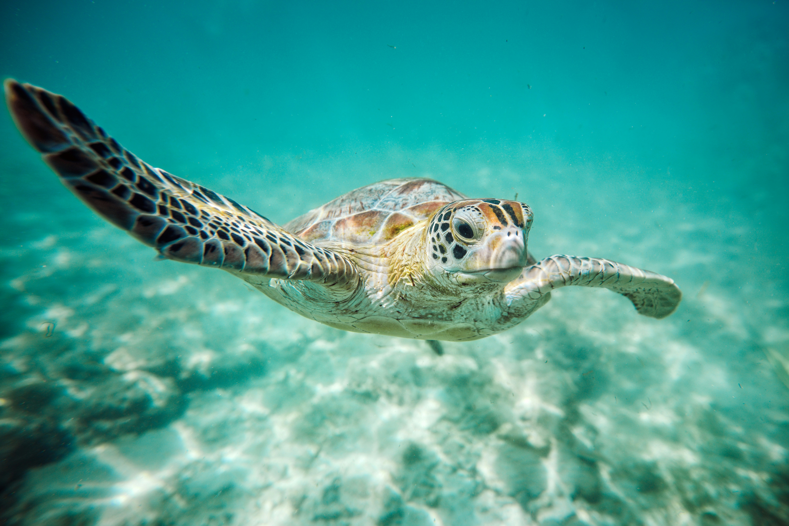

We need biodiversity for a lot of reasons, biodiversity provides us the food we rely on. This is because the food web works on the whole system of species being alive because if one animals food source fully dies out and that is all it eats, then that animal will die out having nothing to eat. This then keeps on going but can be stoped if certain adaptations or flexible diets come into play when this situation occurs.
200 species go extinct everyday but this doesn't mean the end of the world,but if this keeps up then we will be doomed. Coming back to the main idea of trash on our shores, we don't want this for a multitude of reasons such as visual pollution and annoyances and hurting the bio diversity.
Onto the topic of biodiversity,specific to the ocean, turtles are on of the species that are almost extinct. If you throw your trash everywhere, especially plastic, it will at a certain point get washed up into the sea, when it comes times for turtles to go eat, they will see the plastic that you threw away on the ground and think that it is food. Eating the plastic is,very obviously, gonna kill them.

And there is no way for the plastic to leave the ocean unless someone picks it up because it takes hundreds of years to decompose unlike how something organic may decompose sooner. With an already low amount of sea turtles, if this keeps happening, then all sea turtles will die making the species go extinct and majorly shifting the ecological balance of that ecosystem's food web.
Now on the topic of on shore pollution. Please don't put your trash on the shores, keep it with you until the end of your stay or throw it away as soon as possible. This is because of the same reason as keeping biodiversity but also so that there is no visual pollution. This is because if u throw your trash on the ground, people who come here daily are going to keep on seeing it and it gonna ruin the vibe. It will cause visual pollution and also disturb beach goers. So for the sake of others, please pick up your trash.